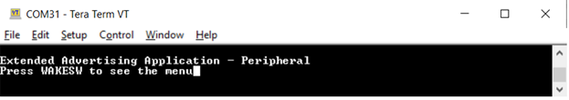
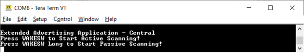
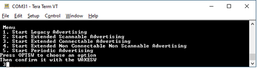
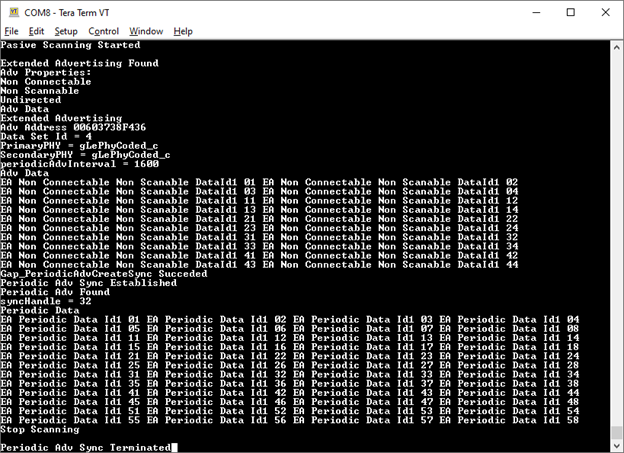
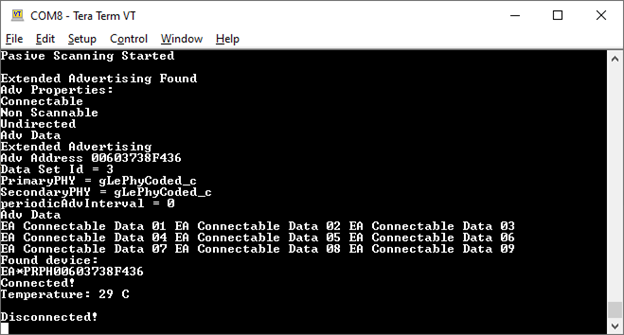

The setup requires two supported platforms, one for the adv ext peripheral, and one for the adv ext central.
- Open a serial port terminal and connect it to each platform with the settings provided in the previous paragraph.
The start screen is displayed after the boards are reset.
Figure 1. adv_ext_peripheral start screen

Figure 2. adv_ext_central start screen

- On the adv_ext_peripheral board, press the WAKESW button. The board
exits cPWR_DeepSleepMode deep sleep mode and prints the menu.
Figure 3. Choosing a menu option on adv_ext_peripheral

Use the OPTSW to choose an option. The option printed on the bottom
changes every time the switch is pressed. When the option matches your intention
(For example, 3 Start Extended Connectable Advertising), press the WAKESW again
to make a decision. The advertising type chosen is started, the deep-sleep mode
changes to gAppDeepSleepMode_c and the board starts entering low-power between
advertising events. Next time the WAKESW is pressed, an updated menu is printed
(For example, at option 3 Stop Extended Connectable Advertising). There is no
timeout for advertising. The board continues advertising until it is stopped, or
a connection is established (for legacy and extended connectable advertising
only) with an adv_ext_central device. The connection is terminated five seconds
after the central device configures notifications for the temperature value.
When all advertisings are off and all connections are terminated, the deep-sleep
mode changes to cPWR_DeepSleepMode and the board enter low-power until the
WAKESW is pressed again. When cPWR_UsePowerDownMode is set 0, LEDs are enabled.
The ADVLED flashes whenever an advertising starts and is ON otherwise. The
CONNLED flashes whenever there is a connection under way and is ON
otherwise.
- On the adv_ext_central board, there are only two options: Press WAKESW
to start active scanning or long press WAKESW to start passive scanning. If catching
extended scannable advertising is not an option, choose passive scanning. Otherwise
active scanning must be chosen. The device wakes up, starts scanning, and enters
deep-sleep mode 6. The scanning ends when the 60 seconds timeout is reached or when
a connection with an adv_ext_peripheral device is established. If a connection is
established, the central changes its low-power mode to gAppDeepSleepMode_c. During
scanning, all advertisings caught from adv_ext_peripheral devices are printed on the
terminal window. When an extended nonconnectable, nonscannable advertising with a
periodic advertising attached is detected, the adv_ext_central device attempts to
sync with the periodic advertising train and prints the periodic advertising data on
the terminal window. When the 60 seconds timer expires or the connection ends, the
device reenters cPWR_DeepSleepMode until the WAKESW is pressed again and all syncs
with periodic advertising trains are terminated. If cPWR_UsePowerDownMode is set 0,
LEDs are enabled. The SCANLED flashes, whenever the device is scanning and is ON
otherwise. The CONNLED flashes, whenever there is a connection under way and is ON
otherwise.
Figure 4. Advertisings caught on adv_ext_central console

- If the adv_ext_central connects to an adv_ext_peripheral device, it
bonds (if no bond was previously made), does service discovery (only the first time
it connects with the peripheral), configures notification and waits for
notifications from the peripheral. If no data is sent within 5 seconds, the node
disconnects and reenters cPWR_DeepSleepMode. The peripheral sends a notification
with the value of the temperature read through an ADC from the thermistor, if
present, or random generated if not. When the central receives the notification, it
prints it on the terminal window and disconnects in 5 seconds.
Figure 5. Connection on adv_ext_central console
